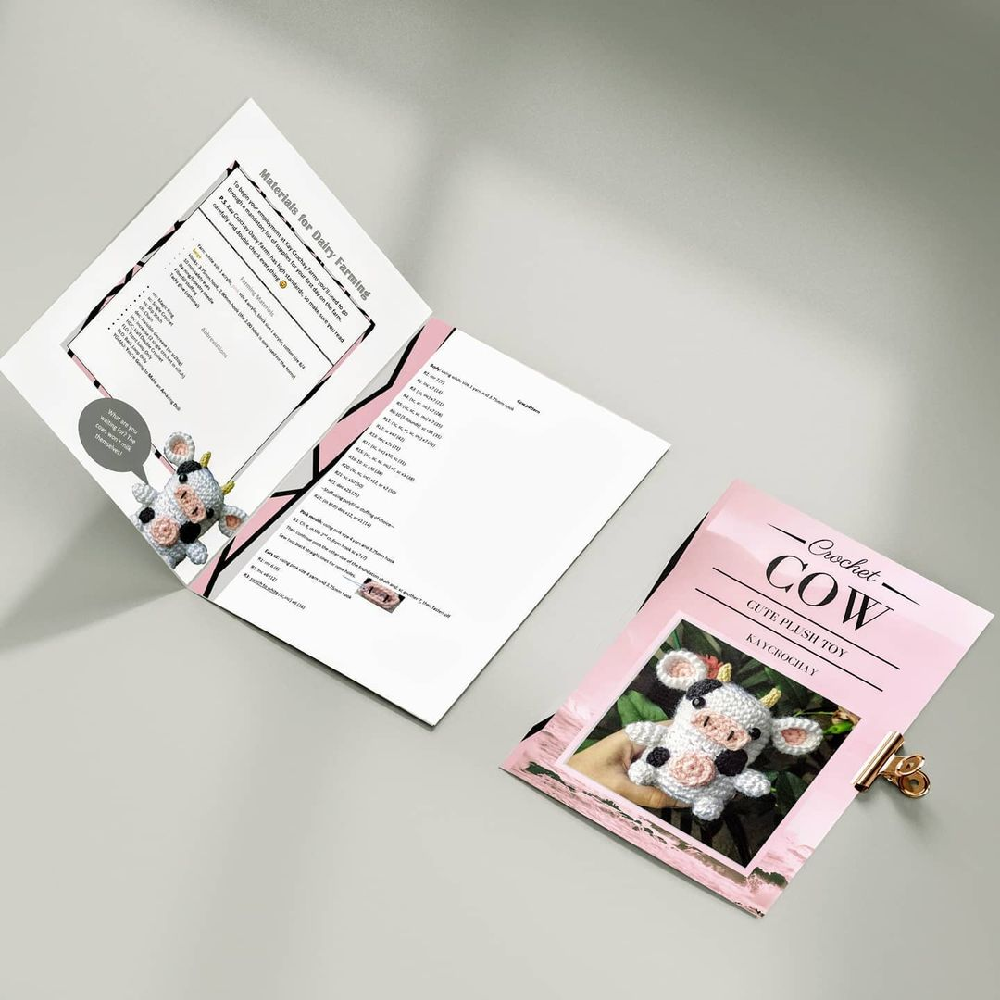
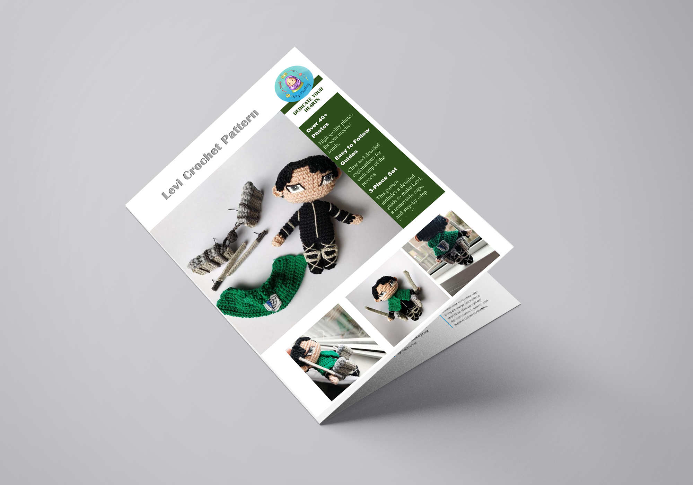

Magazine Spreads
Magazine, Layouts, Spreads
Page layouts and spreads for magazine designs. The focus is on Indesign, while relying on Illustrator for graphics and assets. Photoshop is used to edit the photos used in the spreads.
 